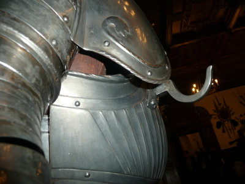
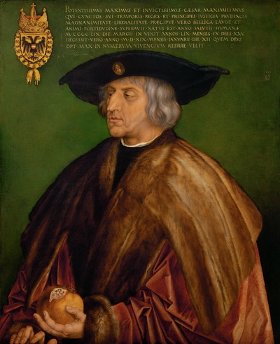

© Muzeul Național Peleș


 printați
printați
+40244 310 918 |
peles.ro@gmail.com |
Armura ecvestră
Desprinse din poveştile cu cavaleri călări şi domniţe cu crinoline, turnirele au apărut în Evul Mediu şi au reprezentat dintotdeauna o competiţie din care ieşea invingător cel mai viteaz, care era întotdeauna şi preferatul nostru. Bazat pe folosirea lancei de către cavaleria grea, turnirul s-a transformat într-un sport către sfârşitul acestei perioade, rămânând popular numai în rândul nobilimii din Anglia şi Germania, în timpul secolului al XVI-lea. În Franţa, aceată confruntare între cavaleri a fost întreruptă pentru o perioadă de timp, după moartea accidentală a regelui Henric II, din anul 1559.
Dacă la început turnirele reprezentau o metodă dură de antrenament pentru război practicată de cavalerie, în secolele al XII-lea şi al XIII-lea, odată cu dezvoltarea “cavalerismului”, turnirele sunt considerate cea mai mare expresie a bărbăţiei şi onoarei unui cavaler, care avea astfel ocazia de a demonstra abilităţile de luptător şi puterea sa fizică, atât stăpânilor, dar mai ales, doamnelor lor, în speranta obţinerii unor favoruri.
Organizate pe echipe de combatanţi, sau individuale, între doi cavaleri, întrecerile se desfăşurau după un anumit cod, care impunea un întreg ceremonial şi reguli stabilite cu aceeasi rigoare ca a codului cavaleresc. Aceste confruntări aveau loc cu ocazia unor evenimente importante, devenind cea mai mare atracţie a zilei, până în secolul al XVI-lea.
Turnirele între doi cavaleri călare (turnire ecvestre), care se deplasează unul către celălalt în cea mai mare viteză, reprezintă competiţia în care se urmăreşte înfrângerea oponentului prin penetrarea armurii sau doborârea acestuia de pe cal, cu ajutorul lancei. Pentru a caştiga un astfel de concurs, trebuia să existe o combinaţie perfectă între forţa şi abilităţile călăreţului, antrenamentul şi dresajului calului, toate într-o simbioză perfectă, devenită uneori letală. |
 |
Armurile de turnir folosite la începuturi erau cele de luptă, manufacturate din plăci metalice şi apărători din zale metalice împletite, “croite” pe măsura fiecărui combatant, menite să-i protejeze corpul de loviturile adversarului. Pe măsură ce armele folosite în competiţii au devenit din ce în ce mai ascuţite, din secolul al XV-lea au fost necesare armuri mai eficiente, formate din plăci metalice, modelate pe corp şi care acopereau aproape în întregime luptătorul. Armurile executate în această perioadă, precum şi în secolul al XVI-lea erau folosite exclusiv pentru paradă şi turnire, deoarece deveniseră caduce pe câmpul de luptă, după apariţia armelor de foc.
Armurile erau executate astfel încât să permită purtarea lor cu usurinţă, precum şi încălecarea pe cal, fără nici un ajutor, ceea ce însemna o foarte bună suprapunere a plăcilor metalice componente, mai ales în zonele corespunzătoare articulaţiilor. Greutatea unei armuri de cavaler este cuprinsă între 25-30kg, însă fiind distribuită pe întreaga suprafaţă a corpului, ea nu este greu de purtat, precum pare la prima vedere. Armura de turnir pentru cavaler, prevede ca plăcile care protejează partea stangă a corpului, considerată mai vulnerabilă în întrecerile între cavaleri dreptaci, să fie mai mari şi mai groase, iar pe platoşă este prevăzut un suport în formă de cârlig, pentru sprijinirea lancei în repaus.
Armura pentru cal protejează capul şi partea anterioară a corpului, fiind formată din plăci multiple înguste, care sunt legate între ele cu benzi din piele fixate in nituri, ce permit culisarea lor în timpul mersului. Valtrapul, care se aşază sub şaua călăreţului şi către crupa calului, este confecţionat din material textil imprimat, de obicei, cu motive heraldice.
Armurile de paradă sunt ornamentate cu motive decorative diverse: florale, geometrice, insemne heraldice, sau personaje, folosind tehnici specifice prelucrarii metalelor: presare (au-répousse), gravare, niello etc. Executate la comandă specială, pentru capete încoronate, ele sunt personalizate şi deosebit de decorative, fără a neglija însă funcţionalitatea.
De multe ori, la ţinutele complete ale cavalerilor, se ataşau diferite accesorii (batiste brodate cu mătase şi perle, banderole colorate etc.) în onoarea doamnelor pentru care luptau, sau pentru a se deghiza, întrucât în perioada romantică, iubirea şi salvarea onoarei unei domniţe din înalta societate, reprezentau motive serioase pentru care cavalerii meritau să-şi rişte viaţa.
Confecţionarea şi asamblarea armurilor reprezenta o preocupare deosebită în această perioadă, care a beneficiat de sprijinul financiar al marilor conducători de state şi imperii, contribuind astfel la apariţia şi apoi dezvoltarea unei adevărate arte. Cele mai sofisticate şi impresionante armuri au fost executate pentru personalităţi istorice ca Maximilian I (1493-1519) – Împăratul Sfântului Imperiului Roman de origine Germanică), Henric VIII (1491 –1547) – Regele Angliei, Charles I (1600-1649) – Regele Angliei, Francisc I (1494-1547) – Regele Franţei, Wladislaw II Jagiello – Regele Boemiei şi Ungariei, mort în 1516. Cele mai renumite armurerii au fost cele din Germania (Augsburg, Nűremberg, Passau), Anglia (Greenwich) şi Italia (Milano), iar meşterii cei mai pricepuţi, care au creat o adevarată artă din această meserie şi un stil propriu în executarea şi decorarea lor: Kolman Helmschmid din Augsburg şi Lucio Piccinino din Milano.
Împăratul Maximilian I (1459-1519) ocupă un loc aparte în evoluţia armureriei atât pentru dezvoltarea manufacturilor cât şi pentru inovaţiile în confecţionarea armurilor, care au determinat crearea unui “stil maximilian”. Mare admirator al turnirului, Maximilian a transformat acest sport într-o competiţie dedicată elitelor, el însusi participând la 64 de competiţii regale, ducând arta acestei lupte cavalereşi până în secolul al XVI-lea, rămânând astfel cunoscut în istorie drept “Ultimul cavaler”. Având această experienţă şi dorind să teoretizeze acest sport, Impăratul şi-a propus să scrie o carte intitulată ”Freydal”, rămasă însă neterminată. Cea mai importantă inovaţie în realizarea armurilor (pentru cavaler, dar şi pentru cal) o reprezintă prezenţa nervurilor pe suprafaţa plăcilor componente, menite să deflecteze arma oponentului şi totodată să mărească rezistenţa materialului. Pe timpul domniei sale, doi meşteri renumiţi au fost învestiţi drept “armuriei ai Curţii” de către Maximilian I şi anume Kolman Helmschmid din Augsburg în anul 1491 şi Konrad Seusenhofer din Innsbruck în 1504. |
 |
Armura pentru cavaler este completă şi cuprinde o cască tip “armet” pentru protejarea capului şi armura pentru corp, care are în componenţa sa un grumăjer lat, format din două plăci din oţel evazate, cuirasa formată din pieptar şi spătar cu margini roluite, care prezintă pe toată suprafaţa nervuri (caneluri) de oprire, iar pe partea dreaptă a pieptarului este fixat în nituri un suport de susţinere a lăncii în şarjă, în formă de cârlig.
Pentru protejarea părţii superioare a corpului cavalerului, armura este prevazută cu două braconiere fixate de cuirasă, două tasete formate din cinci lame mobile, două spaliere simetrice, cu suprafaţa lisă, cu margini roluite şi nituite, două brasarde complete, formate din armura pentru braţ şi armura pentru antebraţ si două cotiere rotunjite, cu plăcuţe articulate. O mănuşă de mâna stângă, cu degete separate, compuse din plăcuţe mici, articulate şi cu manşetă lungă asigura protecţia mâinii.
Pentru membrele inferioare ale călăreţului, sunt prevăzute două armuri de coapsă, semicilindrice, împreună cu două genunchiere bombate, rotunjite, terminate cu două aripioare pentru protejarea articulaţiei; pentru protejarea gambei sunt prevăzute jambiere si moletiere, de formă semicilindrică, articulate cu balamale, terminate cu saboţi de tip “picior de urs”, formaţi din plăcuţe articulate cu nituri şi piele.
Peste talia cavalerului este trecută cureaua pentru tocul de susţinere a lăncii, care este confecţionat din piele groasă, de formă cilindrică, şi se poartă pe partea dreaptă (pentru dreptaci), sau pe stânga (pentru stângaci).
Armura pentru cal cuprinde un fruntar format din patru plăci din oţel, fixate între ele cu nituri, cele laterale fiind decupate pe conturul capului calului si două orificii pentru urechi, cu protecţii metalice, precum si două viziere semisferice, grilajate; apărătoarea gâtului este formată din plăci metalice articulate cu nituri şi piele, tip “coadă de rac”.
Apărătoarea pentru piept este compusă din trei plăci din oţel, de formă trapezoidală, curbate, fixate cu nituri, şi cu margini roluite şi apărătoarea de crupă care este masivă, modelată pe conturul calului, formată din mai multe plăci din oţel.
Şaua din piele groasă, prezintă două arcade metalice înalte si este căptuşită cu piele care se prelungeşte în afara şeii şi prezintă terminaţii decupate, cu motive geometrice şi crin heraldic stilizat. Frâul este confecţionat din piele groasă şi parţial acoperit cu protecţii metalice.
Conform catalogului Scheürer, armura ecvestră are o vechime de aproximativ 500 de ani şi probabil a fost folosită în turnire, deoarece metalul prezintă deformări mecanice, din vechi, provocate de obiecte ascuţite sau contondente. Ansamblul se caracterizează prin precizia şi acurateţea realizării fiecărei părţi componente a armurilor de cavaler şi de cal, dar mai ales prin asamblarea acestora, formând un tot unitar şi cu continuitate a nervurilor de oprire; marginile, bordate cu nituri şi roluite, asigură o terminaţie estetică armurii, dar şi o ranforsare suplimentară; părţile componente metalice, cu suprafaţa lisă, sunt decorate simplu şi sobru, au-repoussé, cu motive florale (spalierele); pielea care căptuşeşte şaua prezintă prelungiri decupate cu motive vegetale şi crin heraldic stilizat, conferindu-i un aspect decorativ dar si functional, dând astfel un plus de valoare piesei în întregime.
Armura ecvestră de turnir, de tip maximilian, este restaurată şi este expusă în Sala mare de arme, de la parterul Castelului Peleş.